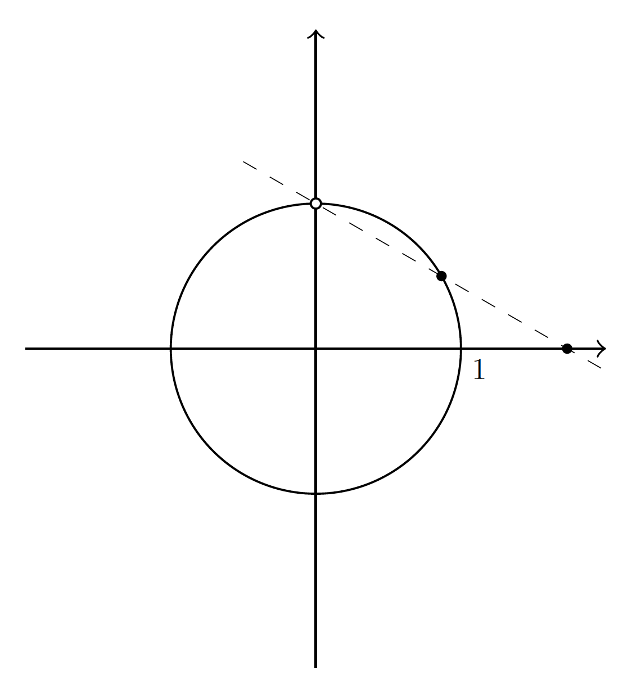
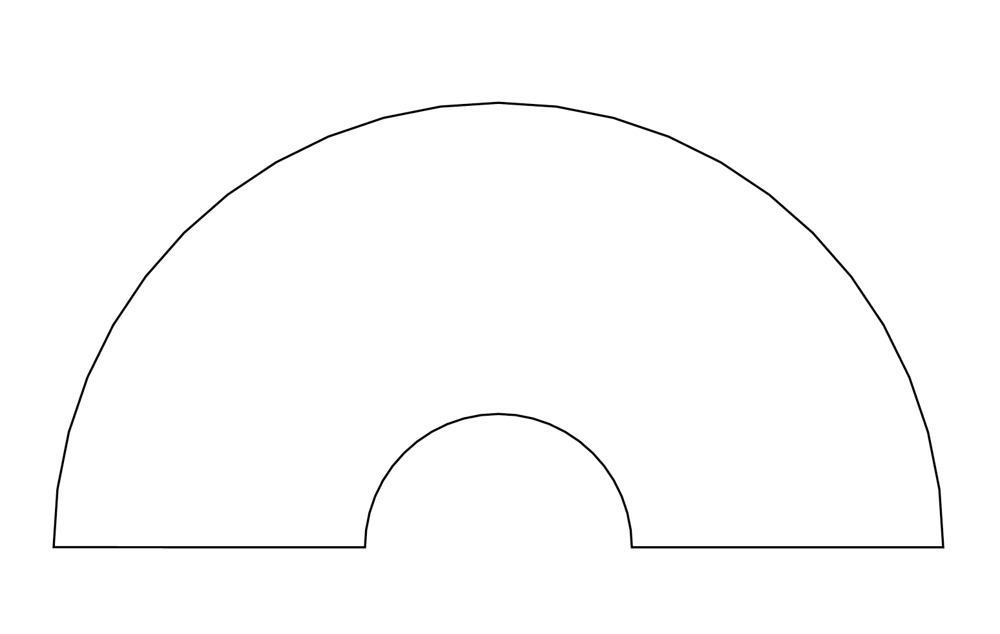

1.2 Parametric Plots (\draw and \node)
Required package(s): \usepackage{tikz}.
- The
\drawfunction can handle parametric plot. The common options (inside the brackets) arevariable=: the parameter. By default, the parameter is\x.domain=: the domain of the parameter.samples=: the length of a eqidistance sequence that spans the domain.color=: the color of the curve. Default is black.fill=: the color of the enclosed area.- Arrow at the end of the curve:
->,->>,|<->| - Line style:
dotted,densely dotted,loosely dotted,dashed, etc. Default is solid. - Line thickness:
thick,very thick,ultra thick,thin, etc. More precise control can be achieved with the optionwidth=.
- The
\nodefunction adds a label to the graph.anchor=: the place of the anchor relative to the label. Accepted key words areeast,west,north,south, or combinations such asnorth west.scale=: the size of the text/symbol.
- Other notable mentions for the example below.
sin(\t r):\tis a parameter andrindicates\tis measured in radians.\pathbehaves exactly as\drawexcept it hides the curve.- Coordinates can be given by cartesian (x, y) or polar form (θ:r). For example, (0, 1) is equivalent to (90:1) in polar coordinates.
(90:1) circle (1pt)is a circle centered at (90:1) with a radius 1 pt.
\begin{figure}[htbp]
\begin{tikzpicture}[scale = 1]
% Draw and fill a circle
\draw [variable=\t, domain=0:2*pi, samples=200, thin, color=black] plot({cos(\t r)}, {sin(\t r)});
\draw [->] (-2, 0) -- (2, 0); % Add the x-axis
\draw [->] (0, -2.2) -- (0, 2.2); % Add the y-axis
\node [anchor=north west, scale=0.5] at (1, 0) {$1$}; % Add tickmark label
\draw [fill=white] (90:1) circle (1pt); % A empty circle at theta=90 and r=1, with radius 1 pt.
\path [fill=black] (30:1) circle (1pt); % A filled circle at theta=30 and r=1, with radius 1 pt.
\path [fill=black] (0:{sqrt(3)}) circle (1pt);
\draw [dashed, domain=-0.5:2, very thin] plot(\x, {1-\x/sqrt(3)});
\end{tikzpicture}
\end{figure}
The \draw command allows multiple parametric curves and points to be joined head to tail.
In the next example, the curve starts at the point (1, 0), goes counterclockwise around a unit circle for 180 degrees, then moves clockwise along a smaller circle for another 180 degrees before finally returns to the point (1, 0).
\begin{figure}[htbp]
\begin{tikzpicture}[scale = 1]
\draw (1,0)
-- plot[domain=0:pi] ({cos(\x r)}, {sin(\x r)})
-- plot[domain=pi:0] ({0.3*cos(\x r)}, {0.3*sin(\x r)})
-- cycle;
\end{tikzpicture}
\end{figure}